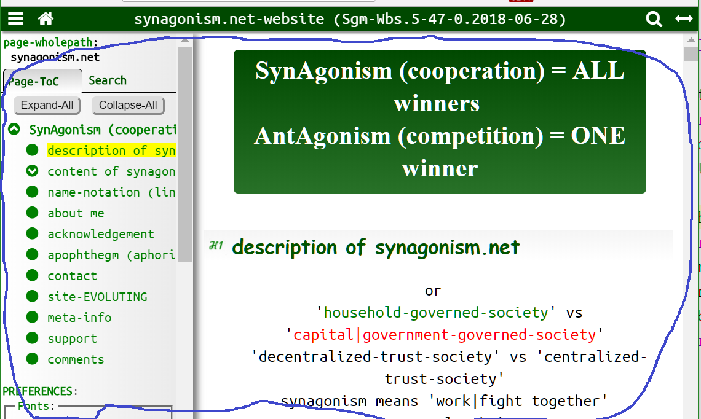
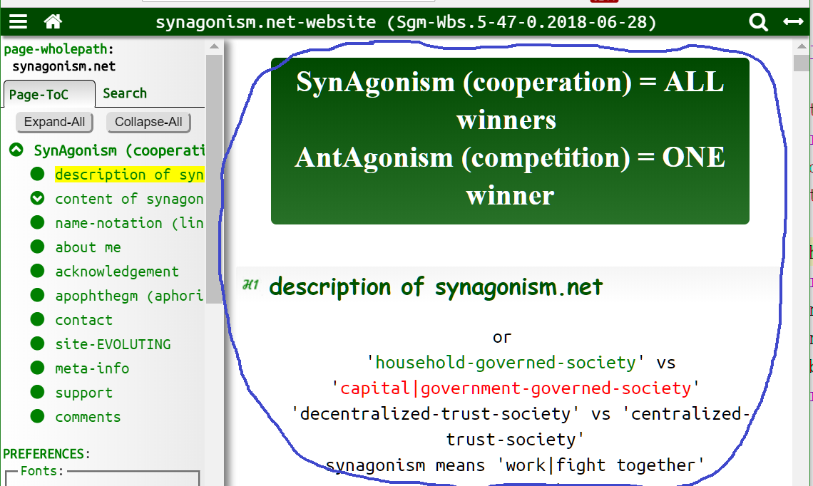
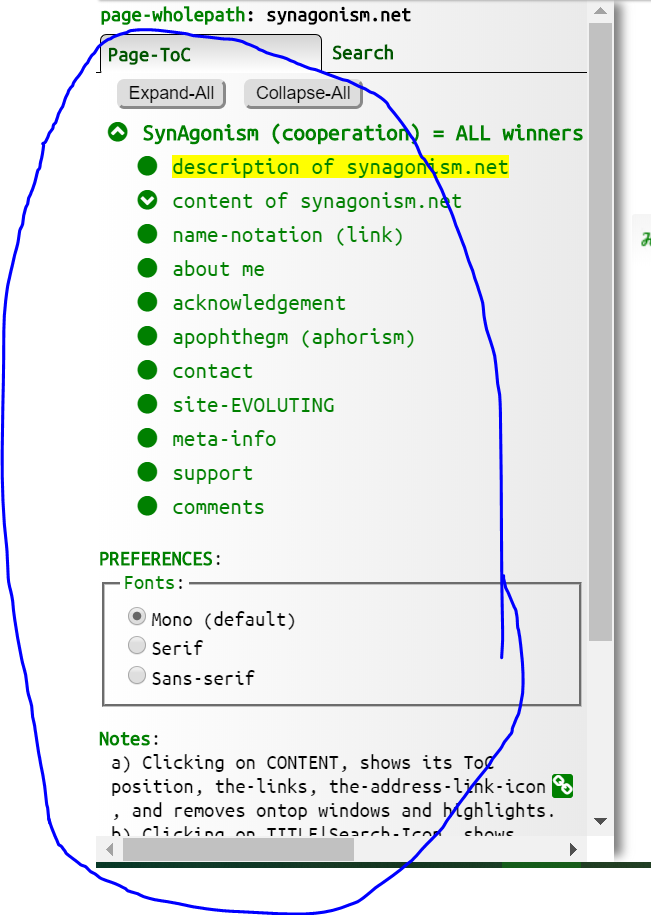
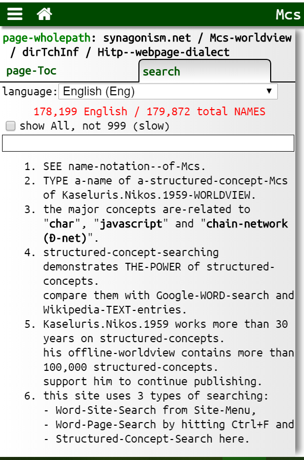
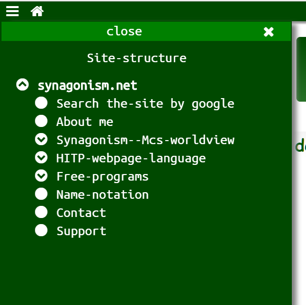

03_web-app-doc (output) of Hitp_lago
description::
· a-Hitp_lago-web-app-doc is A-DOCUMENT which maps|represents|denotes|models an-archo-title-content-tree-doc.
· it is structured for humans and machines.
· it contains and extra information apart of the archo-doc representation, such as meta-info, audio, video, webapps.
· it is-written in 3 computer-languages, and it is a-web-application:
• Html: for the-structure of the-information,
• Css: for its presentation,
• Browser-javascript (Jsbr): for its processing.
· the-Html-doc is the most whole container which includes the-Css-code and the-JavaScriptBr-code.
[HmnSgm.2017-09-23]
name::
* McshEngl.output-of-Hitp_lago!⇒Hitpdoc,
* McshEngl.Hitpdoc!=output-of-Hitp_lago,
* McshEngl.Hitp-file!⇒Hitpdoc,
* McshEngl.Hitp-files!~plural!⇒Hitpdoc,
* McshEngl.Hitp_app!⇒Hitpdoc,
* McshEngl.Hitp_doc!⇒Hitpdoc,
* McshEngl.Hitp_lago'03_web-app!⇒Hitpdoc,
* McshEngl.Hitp_lago'web-app!⇒Hitpdoc, {2019-02-21},
* McshEngl.Hitp_lago'output!⇒Hitpdoc,
* McshEngl.Hitp_lago'page!⇒Hitpdoc, {2019-02-23},
* McshEngl.Hitp_lago-code!⇒Hitpdoc,
* McshEngl.Hitp_lago-doc!⇒Hitpdoc,
* McshEngl.Hitp_lago-model!⇒Hitpdoc,
* McshEngl.Hitp_lago-webpage!⇒Hitpdoc, {2019-06-15},
* McshEngl.Hitp_page!⇒Hitpdoc,
* McshEngl.Hitp-web-app-doc!⇒Hitpdoc,
* McshEngl.Hitp-web-page!⇒Hitpdoc,
* McshEngl.web-app.Hitp_lago!⇒Hitpdoc,
browser-compatibility of Hitpdoc
description::
· Hitpdocs are-tested on modern {2016} browsers on win10: Chrome, Firefox, Safari, Edge, IE11.
name::
* McshEngl.Hitpdoc'browser-compatibility,
* McshEngl.Hitp_lago'browser-compatibility,
* McshEngl.Hitp_lago'browser-support,
download of Hitpdoc
GitHub-site::
· since version.10.2014-08-05.valuenames I published the-code on GitHub.
• new {2026}:
- https://github.com/synagonism/diHitp/ (example Hitpdocs)
- https://github.com/synagonism/diMcshmgr/ (the-manager)
• old {2025}: https://github.com/synagonism/hitp/
Synagonism-site::
• hitp.20.2025-05-29.separated,
• hitp.20.2025-05-25.separated,
• hitp.19.2025-05-25.misc,
• hitp.18.2021-05-25.module,
• hitp.17.2018-09-15.search-scalability,
• hitp.16.2017-06-05.Searching,
• hitp.15.2016-10-27.any-machine,
• hitp.14.2016-06-09.title-content-tree,
• hitp.12.2016-01-24.Toc-icons,
• hitp.11.2015-10-26.preferences,
• hitp.10.2014-08-05.valuenames,
• hitp.08.2014-01-09.Toc,
• hitp.07.2013-11-06.tabs,
• hitp.05.2013-07-15.Toc-algo,
• hitp.04.2013-06-27.html5.id.toc.preview,
• hitp.03.2013-04-14.preview,
• hitp.02.2013-04-01.Toc,
• hitp.01.2011-02-17.html5.id,
name::
* McshEngl.Hitp_lago'download,
* McshEngl.Hitpdoc'download,
file of Hitpdoc
· every Hitpdoc is comprised of::
* one Html-file the main container,
* one Css-file,
* one JavaScript-file,
* one optional directory with all other needed files such as pictures, audio, video, Css, etc. The-name of the-directory is the-same with the-name of the-html-file plus the '.files' extension.
* dirSubject/HitpDirNnn.last.html,
* dirSubject/HitpDirNnn.files, optional,
* dirManager/mMcsh2.css,
* dirManager/mMcsh2.js,
* dirManager/HitpFileFntUbuntuMonoRegular.ttf, (Css code)
* dirManager/HitpFileIcnFa463.woff2, (Css code)
* dirRoot/HitpConfig.json,
* HitpIndexFiles:
- dirNamidx/namidx.lagRoot.json,
- dirNamidx/dirLagLlll/namidx.lagLlll00.json,
- dirNamidx/dirLagLlll/namidx.lagLlll01.json, ..,
name::
* McshEngl.Hitpdoc'file!⇒Hitp_file,
* McshEngl.Hitp_file,
directory of Hitpdoc
description::
· optionally, the-Hitpdoc has a-directory with all extra files needed such as images, specific Css or Jsbr code, anything.
· its name is the-name of the-Hitp_lago-Html-file plus '.files'.
Html-code of Hitpdoc
description::
· the-Html-language models the-structure of a-Hitp_lago-web-app and stores the-content of the-archo-doc.
· the-Html-doc is the most whole CONTAINER of the-web-app.
· it contains the-Css-code and the-JavaScript-code.
name::
* McshEngl.Html-code--of-Hitpdoc!⇒Hitphtml,
* McshEngl.Hitphtml!=Html-code--of-Hitpdoc,
* McshEngl.Hitp-Html-code!⇒Hitphtml,
* McshEngl.Hitphml!⇒Hitphtml, {2020-05-08}
* McshEngl.Hitphtml-doc!⇒Hitphtml,
* McshEngl.Hitphtml-code!⇒Hitphtml,
* McshEngl.Hitpdoc'Html-code!⇒Hitphtml,
* McshEngl.Html-code--of-Hitp_lago!⇒Hitphtml,
* McshEngl.Hitp_lago'Html!⇒Hitphtml,
Hitphtml'Html5
description::
· we use the-Html5-elements section, header, footer to create the-parts of a-Hitpdoc that maps a-title-content-tree-doc.
name::
* McshEngl.Hitphtml'Html5,
* McshEngl.HitpHtml5,
* McshEngl.Hitp_lago'Html5,
Hitphtml'title-content-tree--document
description::
· a-Hitp_lago--title-content-tree-document maps an-archo-title-content-tree--document.
· we use the section, header, footer and p Html-elements to create Hitpdocs.
name::
* McshEngl.Hitp--title-content-tree--document!⇒Hitp_tct_doc,
* McshEngl.Hitp_tct_doc!=Hitp--title-content-tree--document,
* McshEngl.Hitphtml'title-content-tree--document!⇒Hitp_tct_doc,
part::
• title-of-Hitp_lago-tree,
• content-of-Hitp_lago-tree,
• doc-unit-of-Hitp_lago-tree,
specific::
• footer-tree,
• header-tree,
• meta-tree,
• p-tree,
• root-tree,
• section-tree,
Hitp_tct_doc.ROOT (header)
description::
· a-Hitp_lago-root-tree (a-Hitpdoc) maps|represents an-archo-root-tree (a-title-content-tree-doc).
· we use a-header and an-h1 elements to create the-title, and an-ordered-set of h1-trees with last a-footer-tree to create the-content of the-root-tree.
· the-header-element is the first child of the-body-element.
<header id="idHeader">
<h1 id="idHeaderH1">Title
</h1>
</header>
<section id="idName">
<h1 id="idNameH1">Title
</h1>
content
</section>
<footer id="idFooter">
<p id="idFooterP1">Title:
doc-units
</p>
</footer>
name::
* McshEngl.Hitp_tct_doc.header,
* McshEngl.Hitp_lago'header-tree,
* McshEngl.Hitp_tct_doc.root,
* McshEngl.Hitp_lago'root-tree,
* McshEngl.Hitp_lago'document.root,
* McshEngl.Hitpdoc.root,
Depth::
· the biggest depth of a-Hitpdoc is 6+1.
· this is because the-heading-elements h1 ... h6 are 6 and thus a-section-tree can have only 5 subtrees.
· the extra depth we get from p-trees.
PROPOSAL: Because many documents use deeper depth than 7 (even-though I do-not-think it is a good practice) I proposed on {2010.10.24} in public-html-comments@w3.org list to use all the single-digit numbers 0-9 as html-headings.
Hitp_tct_doc.SECTION
description::
· a-section-tree is a-tree in which we use the-section-element as a-container, a-heading-element for its title and for its content, doc-units or other section-trees.
· the-subtrees of a-section-tree have ordered titles in the form h1, h2, h3, h4, h5, and h6.
<section id="idName2">
<h2 id="idName2H2">Title2
</h2>
<p>Sentence1.
Sentence2.
</p>
<section id="idName3">
<h3 id="idName3H3">Title3
</h3>
<p>Sentence1.
Sentence2.
</p>
</section>
</section>
name::
* McshEngl.Hitp_tct_doc.section,
* McshEngl.Hitp_lago'section-tree,
specific::
• h1-section-tree (has h1-element as title),
• h2-section-tree (has h2-element as title),
• h3-section-tree (has h3-element as title),
• h4-section-tree (has h4-element as title),
• h5-section-tree (has h5-element as title),
• h6-section-tree (has h6-element as title),
Hitp_tct_doc.FOOTER
description::
· a-Hitp_lago-footer-tree is an optional special tree, last child of the-root-tree.
· it is-created with the-footer-element, with no title, and content document-units with text that ends the-text of the-doc.
<footer id="idFooter">
<p id="idFooterP1">Title:
doc-units
</p>
</footer>
name::
* McshEngl.Hitp_tct_doc.footer,
* McshEngl.Hitp_lago'footer-tree,
Hitp_tct_doc.P
description::
· a-Hitp_lago-p-tree is always a-leaf-tree we create with the-p-element.
Its-title is the first line which ends with ':'.
Its-content contains only doc-units.
<p id="idName">Title:
sentences or subparagraphs
</p>
//or
<div id="idName">
<p>Title:
Sentence1.
Sentence2.
</p>
<table>
...
</table>
</div>
name::
* McshEngl.Hitp_tct_doc.p,
* McshEngl.Hitp_lago'p-tree,
Hitp_tct_doc.meta
description::
· a-web-app-meta-tree is a special section-tree, which is NOT PART of the-root-tree.
· it contains meta-info about the-doc such as versions, comments, support etc.
<section id="idMeta">
<h1 id="idMetaH1">Meta-Info
</h1>
content.meta
<p id="idMetaWebpage_path"><span class="clsB clsColorGreen">page-wholepath</span>:
Hitp_lago-web-app
∈ synagonism.net
</p>
</section>
name::
* McshEngl.Hitp_tct_doc.meta,
* McshEngl.Hitp_lago'meta-tree,
Hitphtml'title
description::
· a-Hitp_lago-title maps an-archo-title\1\.
· we use the-heading-elements (h1, h2, ... h6) to implement it\1\:
<h1 id="idName">title</h1>
or the first line of a-p-element ending with '::'
<p id="idName">title::
doc-unit
</p>
name::
* McshEngl.Hitp_lago'title,
* McshEngl.Hitp_lago'web-app-title,
* McshEngl.Hitphtml'title,
Hitphtml'content
description::
· a-Hitp_lago-content maps an-archo-content.
· it contains Hitpdoc-units and other Hitp_lago-trees.
name::
* McshEngl.Hitp_lago'content,
* McshEngl.Hitp_lago'web-app-content,
* McshEngl.Hitphtml'content,
Hitphtml'content-unit
description::
· a-Hitpdoc-unit maps an-archo-doc-unit.
· it is-created with p-elements and inline elements, or we use a-div-element as a-container if and extra block elements like ol, ul, table create the-doc-unit.
name::
* McshEngl.Hitphtml'doc-unit!⇒Hitp_content_unit,
* McshEngl.Hitp_content_unit!=Hitphtml'doc-unit,
* McshEngl.Hitphtml'document-unit!⇒Hitp_content_unit,
* McshEngl.Hitphtml'unit!⇒Hitp_content_unit,
* McshEngl.Hitp_lago'Html-unit!⇒Hitp_content_unit,
specific::
• paragraph-with-sentences-doc-unit,
• paragraph-with-subparagraphs-doc-unit,
• non-sentences-doc-unit,
line-through in Hitp_content_unit
description::
· with the-Html-element <del>.
name::
* McshEngl.Hitp_content_unit'line-through,
* McshEngl.HitpTextStyle.line-through,
Hitp_content_unit.Paragraph-with-sentences
description::
· for readability, we put every sentence in a new line.
<p id="idName">Sentence1.
Sentence2.
SentenceLast.
</p>
name::
* McshEngl.Hitp_content_unit.paragraph-with-sentences,
* McshEngl.Hitp_content_unit.sentences,
* McshEngl.Hitp_lago'sentences-Html-doc-unit,
Hitp_content_unit.Paragraph-with-subparagraphs
description::
<p id="idName">Sentence1.
Sentence2.
Sentence3.
SentenceLast.
</p>
name::
* McshEngl.Hitp_content_unit.paragraph-with-subparagraphs,
Hitp_content_unit.non-sentences
description::
<div id="idName">
<p>Sentence1.
Sentence2.
</p>
<table>
...
</table>
<a class="clsHide" href="#idName"></a></div>
name::
* McshEngl.Hitp_content_unit.non-sentences,
* McshEngl.Hitp_lago'non-sentences-Html-doc-unit,
Hitphtml'file
description::
· the-html-file is the main file of the-Hitpdoc.
· it is the most whole CONTAINER of all files of the-web-app.
· the-Hitphtml-code is this file.
· see the-example-file.
· naming:
- HitpDirnnn.last.html,
- HitpDirnnn.version.date.html, previous versions,
name::
* McshEngl.Html-file--of-Hitp_lago,
* McshEngl.Hitp_docHtmlFile,
* McshEngl.Hitp_lago'file.Html,
* McshEngl.Hitphtml'file,
Hitphtml'IDs
description::
· the core concept (and first motive) of our-proposal is the-addition of ID-attributes on all Html-elements of a-Hitpdoc.
· for example:
<h1 id="idXxxx">...
<p id="idYyyy">...
· now we can-refer to any part of the-document!!!
name::
* McshEngl.Hitphtml'id!⇒Hitpid,
* McshEngl.Hitpid!=Hitphtml'id,
* McshEngl.Hitp_id!⇒Hitpid,
* McshEngl.Hitp_lago'id!⇒Hitpid, {2019-02-24},
The-IDs must-be unique::
· you can-use as ID whatever you want.
· we sugest to begin with "id" in-order to be-distinguished from other words in the-text and do-not-contain spaces.
· for example:
id, idHeader, idLagHitpidx-income, ...
ID-Patterns::
· if the-author of a-doc uses patterns to write the-IDs of a-text-file, it helps the-reader to quickly identify the-parts of the-file.
· examples:
- idA4 (article)
- idA4P2 (paragraph)
- idP2 (Part)
- idP2C2 (Chapter)
NOTATION::
· the-ID of a-heading-element is the-ID of its section-element plus H1, H2, etc.
· this way we can-link and preview the-part of the-doc with this heading.
address-link-icon of Hitp_lago
description::
· the-IDs must-be visible to the-reader:
· the-reader, in-order to REFER to any part of the-document, must-know the-ID of this part of the-file.
· this can-be-done by adding a hidden element in this part of the-file that will-be-visible when we want to see it and not disturbing our text.
· but if this hidden-element is and a-link-element, then the-reader could-copy the-address of this part of the-file from the-address-bar of his browser.
· here is an-example of the simple code we have to add to reach our goal.
<p id="idYyyy">...
<a class="clsHide" href="#idYyyy"></a></p>
· with this code, when the-reader clicks|taps on content, at the-end of the clicked doc-unit appears the-ADDRESS-LINK-ICON.
· clicking on this icon, s|he can-see the-ID of this text and s|he can-copy from the-address-bar the-address of this particular part of the-text.
· the-paragraph you are-reading now has the-feature we are-talking about and you can-experiment with it.
· we can-set IDs, if we need them, on every SENTENCE in a-paragraph.
name::
* McshEngl.Hitp_lago'address-link-icon,
* McshEngl.Hitpid'address-link-icon,
Hitphtml'links
description::
· by setting IDs in all elements of a-text, we can-refer to any part of a-document.
· then we can-use links in all places in a-text we refer to another place inside a-document or outside of it.
· law-texts are full of references.
· find the-references it is difficult and sometimes impossible.
· if the-references are "one click away", then reading law will become easier.
name::
* McshEngl.Hitphtml'link!⇒Hitp_link,
* McshEngl.Hitp_link!=Hitphtml'link,
* McshEngl.Hitp_lago'link!⇒Hitp_link,
Hitphtml'math-formulas
description::
· using MathJax we can-have "beautiful math in all browsers".
HOW:
1. we need to add the following code:
· using MathJax version 3:
<script id="MathJax-script" async src="https://cdn.jsdelivr.net/npm/mathjax@3/es5/tex-mml-chtml.js"></script>
- works on both TeX and MathML input.
- example TeX:
When \(a \ne 0\), there are two solutions to \(ax^2 + bx + c = 0\) and they are \[x = {-b \pm \sqrt{b^2-4ac} \over 2a}.\]
When \(a \ne 0\), there are two solutions to \(ax^2 + bx + c = 0\) and they are \[x = {-b \pm \sqrt{b^2-4ac} \over 2a}.\]
another inline expression \(\sum_{n=1}^{\infty} 2^{-n} = 1\)
· old version:
<script src="https://cdnjs.cloudflare.com/ajax/libs/mathjax/2.7.4/MathJax.js?config=TeX-MML-AM_CHTML" async></script> and
2. create TeX | mathML-code (I prefer TeX for compactness).
An easy method is to copy it from online sites like:
* http://www.wiris.com/editor/demo/en/developers#mathml-latex,
* http://www.wiris.com/editor/demo/en/chemtype,
name::
* McshEngl.math-formulas-in-Hitp_lago!⇒Hitpmath,
* McshEngl.Hitpmath!=math-formulas-in-Hitp_lago,
* McshEngl.Math-notation.synagonism.net!⇒Hitpmath,
* McshEngl.MathJax-Webapp!⇒Hitpmath,
* McshEngl.Mcsh_math!⇒Hitpmath,
* McshEngl.Webapp.MathJax!⇒Hitpmath,
* McshEngl.Hitp_lago'math!⇒Hitpmath,
* McshEngl.Hitp_math!⇒Hitpmath,
* McshEngl.math-in-Hitp_lago!⇒Hitpmath,
Css-code of Hitpdoc
description::
· the-Css-language models the-presentation of the-archo-doc.
· we use a-Css-file\1\ for harmonization in the-appearance of documents and for the-Toc creation.
· you need the following code, inside the-Html-doc, to use it\1\:
<link rel="stylesheet" href="/dirMcshmgr/mMcsh2.css">
· also you can modify the-appearance of the-document by using AND your own Css-code.
name::
* McshEngl.Hitp-Css-code!⇒Hitpcss,
* McshEngl.Hitpcss!=Hitp--Css-code,
* McshEngl.Hitpcss-code!⇒Hitpcss,
* McshEngl.Hitp_lago'Css!⇒Hitpcss, {2019-02-21},
file of Hitpcss
description::
· the-Css-code has 3 files in dirMcshmgr.
* mMcsh2.css: main file, and 2 font files,
* HitpFilFntUbuntuMonoRegular.ttf and
* HitpFilIcnFa463.woff2 (Icons Font Awesome 4.6.3)
· you can-download them from github-(https://github.com/synagonism/dirMcshmgr/) or from here:
- mMcsh2.css,
- filFntUbuntuMonoRegular.ttf,
- filIcnFa463.woff2,
name::
* McshEngl.Hitpcss'file,
* McshEngl.Hitp_file.Css,
* McshEngl.HitpFilFntUbuntuMonoRegular.ttf!⇒filFntUbuntuMonoRegular.ttf,
* McshEngl.filFntUbuntuMonoRegular.ttf,
* McshEngl.HitpFilIcnFa463.woff2!⇒filIcnFa463.woff2,
* McshEngl.filIcnFa463.woff2,
* McshEngl.HitpM.css!⇒mMcsh2.css,
* McshEngl.mMcsh2.css,
class of Hitpcss
description::
· like the-IDs, the-names of all Css-classes begin with 'cls'.
name::
* McshEngl.Hitp-class-of-Css!⇒Hitpcls,
* McshEngl.Hitpcls!=Hitp-class-of-Css,
* McshEngl.clsHitp!⇒Hitpcls, {2022-12-14},
* McshEngl.Hitp_lago'class-of-Css!⇒Hitpcls,
* McshEngl.Hitp_lago'cls!⇒Hitpcls, {2019-02-28},
* McshEngl.Hitp_cls!⇒Hitpcls,
* McshEngl.Hitpcss'class!⇒Hitpcls,
Hitpcls.hide
description::
· this class is-used to display the-link-icon  \a\ at the-end of an-Html-element\b\ that\a\ contain the-address of this element when the-reader clicks on it\b\.
\a\ at the-end of an-Html-element\b\ that\a\ contain the-address of this element when the-reader clicks on it\b\.
name::
* McshEngl.Hitpcls.clsHide,
* McshEngl.clsHide-of-Hitp_lago,
Hitpcls.preview
description::
· links with this class, display a-preview of their info and with a second click go to that location.
name::
* McshEngl.Hitpcls.clsPreview,
* McshEngl.clsPreview-of-Hitp_lago,
Hitpcls.clicked
description::
· this class is-added on the-Html-elements clicked by the-user and adds misc functionality:
- display the-address-link-icons.
- add color on the-links in the clicked element.
name::
* McshEngl.Hitpcls.clsClicked,
* McshEngl.clsClicked-of-Hitp_lago,
Hitpcls.TocExpand
description::
· if this class is-present on idMetaWebpage_path paragraph, then when the-page is-opened the-Toc is-expanded.
name::
* McshEngl.Hitpcls.clsTocExpand,
* McshEngl.clsTocExpand-of-Hitp_lago,
Hitpcls.paperbook-page
description::
· it is-used on span-elements to display the-number of a-page of a-paper-book in Hitp_lago-format.
name::
* McshEngl.Hitpcls.paperbook-page,
* McshEngl.Hitpcls.clsPagePb,
* McshEngl.clsPagePb-of-Hitp_lago,
Hitp_lago'clsPagePb {
display: block;
text-align: right;
color: green;
}
Hitpcls.center
description::
· classes to center text, and block or inline Html-elements.
Hitp_lago'clsCenter {
text-align: center;
}
Hitp_lago'clsCenterBlock {
display: block;
margin-left: auto;
margin-right: auto;
}
Hitp_lago'clsCenterInline {
display: block;
text-align: center;
}
name::
* McshEngl.Hitp_lago'center-text,
* McshEngl.Hitpcls.center,
* McshEngl.Hitpcls.clsCenter,
* McshEngl.clsCenter-of-Hitp_lago,
Hitpcls.button
description::
· classes on HtmlButtons.
Hitp_lago'clsBtn {
border-radius: 5px;
font-size: 12px;
margin: 2px 0 5px 12px;
}
Hitp_lago'clsBtn:hover {
background: #e0f2f7;
color: red;
}
name::
* McshEngl.Hitp_lago'button-class,
* McshEngl.Hitpcls.button,
* McshEngl.clsBtn-of-Hitp_lago,
Hitpcls.color
description::
· classes to set color on Html-elements.
Hitp_lago'clsColorBlue {
color: #0000ff;
}
Hitp_lago'clsColorGreen {
color: #008000;
}
Hitp_lago'clsColorGreenBg {
background-color: #008000;
}
Hitp_lago'clsColorRed {
color: #ff0000;
}
Hitp_lago'clsColorYellow {
color: #FFFF00;
}
Hitp_lago'clsColorYellowBg {
background-color: #FFFF00;
}
name::
* McshEngl.Hitp_lago'color-classes!⇒Hitp_color,
* McshEngl.Hitp_color!=Hitp_lago'color-classes,
* McshEngl.Hitpcls.color!⇒Hitp_color,
* McshEngl.clsColor-of-Hitp_lago!⇒Hitp_color,
Hitpcls.font
description::
· classes that add fonts on Html-elements.
Hitp_lago'clsFontGrExt {
font-family: "Palatino Linotype";
}
Hitp_lago'clsFontGrMg {
font-family: MgPolNewTimes;
font-size: 16px;
}
Hitp_lago'clsFontSerif {
font-family: Serif, "Times New Roman", Georgia;
}
Hitp_lago'clsFontSansserif {
font-family: SansSerif, "Microsoft Sans Serif", Arial, Dialog, Tahoma;
}
Hitp_lago'clsFontMonospaced {
font-family: Monospaced, "Courier New", Courier;
}
Hitp_lago'clsFontScript {
font-family: Script "Monotype Corsiva";
}
Hitp_lago'clsFontDecorative {
font-family: Wingdings;
}
name::
* McshEngl.Hitp_lago'font-classes!⇒Hitp_font,
* McshEngl.Hitp_font!=Hitp_lago'font-classes,
* McshEngl.Hitpcls.font!⇒Hitp_font,
* McshEngl.clsFont-of-Hitp_lago!⇒Hitp_font,
Hitpcls.size
description::
· classes to add font-sizes on Html-elements.
Hitp_lago'clsSizeSmall {
font-size: small;
}
Hitp_lago'clsSizeSmallX {
font-size: x-small;
}
Hitp_lago'clsSizeMedium {
font-size: large;
}
Hitp_lago'clsSizeLarge {
font-size: large;
font-weight: bold;
}
Hitp_lago'clsSizeLargeX {
font-size: x-large;
font-weight: bold;
}
name::
* McshEngl.Hitp_lago'size-of-font,
* McshEngl.Hitpcls.size,
* McshEngl.clsSize-of-Hitp_lago,
Hitpcls.BIU
description::
· classes to add font-weight on Html-elements.
Hitp_lago'clsB {
/* use strong element, not this */
font-weight: bold;
}
===
· also use the-Html-element <strong>.
Hitp_lago'clsBU {
font-weight: bold;
text-decoration: underline;
}
Hitp_lago'clsI {
font-style: italic;
}
===
· also use the-Html-element <em>.
Hitp_lago'clsU {
text-decoration: underline;
}
name::
* McshEngl.Hitp_lago'bold-class,
* McshEngl.Hitp_lago'italic-class,
* McshEngl.Hitp_lago'underline-class,
* McshEngl.Hitpcls.bold,
* McshEngl.Hitpcls.italic,
* McshEngl.Hitpcls.underline,
* McshEngl.Hitpcls'clsB,
* McshEngl.Hitpcls'clsBU,
* McshEngl.Hitpcls'clsI,
* McshEngl.Hitpcls'clsU,
* McshEngl.clsBIU-of-Hitp_lago,
JavaScript-code of Hitpdoc
description::
Browser-JavaScript-language models the-information processing on the-Hitpdoc.
- creates the-Toc and inserts it into the-page.
- makes the-width of Toc-container dynamic.
- adds preferences on the-page.
- adds the-site-structure.
- adds the-page-path.
- ...
name::
* McshEngl.Hitp--JavaScript-browser-code!⇒Hitpjsbr,
* McshEngl.Hitpjsbr!=Hitp--JavaScript-browser-code,
* McshEngl.Hitp_lago'JavaScript-code!⇒Hitpjsbr,
* McshEngl.Hitp_lago'JS-code!⇒Hitpjsbr,
* McshEngl.Hitpjsbr-code!⇒Hitpjsbr,
* McshEngl.Hitpdoc'browser-JavaScript-code!⇒Hitpjsbr,
* McshEngl.Hitpdoc'JavaScript-code!⇒Hitpjsbr,
* McshEngl.Hitpdoc'JS-code!⇒Hitpjsbr,
* McshEngl.Hitpdoc'Jsbr-code!⇒Hitpjsbr,
* McshEngl.Hitp_lago'Jsbr!⇒Hitpjsbr, {2019-02-21},
* McshEngl.Hitp_lago--Jsbr-code!⇒Hitpjsbr,
* McshEngl.JavaScript-code--of-Hitp_lago!⇒Hitpjsbr,
* McshEngl.Jsbr-code--of-Hitp_lago!⇒Hitpjsbr,
Hitpjsbr'file
description::
mMcsh2.js is the-JavaScript-code you need to create a-Hitp-web-app-doc.
· it is part of the-Html-doc.
· it is-included using the-script-element at the-end of the-body-element:
<script type="module">
import * as oMcsh from '/dirMcshmgr/mMcsh2.js'
</script>
· so, HitpMisc000.last.html, mMcsh2.css and mMcsh2.js is the-main code needed to create Hitpdocs, and it is free (MIT license).
name::
* McshEngl.Hitp_file.JavaScript,
* McshEngl.Hitp_lago'JavaScript-file,
* McshEngl.Hitpjsbr'file,
* McshEngl.mMcsh2.js,
Hitpjsbr'API
description::
· a-Hitp_lago-Jsbr-document has an-API, like any programing-language document, with oHitp the-most-whole-object.
name::
* McshEngl.API.Hitp_lago,
* McshEngl.HitpAPI,
* McshEngl.Hitp_lago'API,
* McshEngl.Hitpjsbr'API,
repository::
* https://github.com/synagonism/hitp,
oHitp of HitpAPI
description::
oHitp is the-most-whole-object of the-Hitp_lago-JavaScript-document.
name::
* McshEngl.Hitp_lago'API'oHitp!⇒oHitp,
* McshEngl.Hitp_lago'oHitp!⇒oHitp,
* McshEngl.oHitp, {2019-02-24},
member::
// 20-0-1.2025-05-25 console.log(Object.getOwnPropertyNames(oHitp).sort().join(', '))
[aSuggestions, aVersion, aaNamidxfileRoot, bEdge, bFirefox, fContainersInsert, fEvtPreview, fSearchName, fTocTriCreate, fTocTriHighlightNode, nCfgPageinfoWidth, oEltCnrPreviewDiv, oTreeUl, sCfgHomeLocal, sPathHitp]
// 17-7-7.2021-04-28 Object.getOwnPropertyNames(oHitp).sort().join(', ')
[aNamidxRoot, aSuggestions, aVersion, bEdge, bFirefox, fContainersInsert, fObjvalRKey, fTocTriCreate, fTocTriHighlightNode, nCfgPageinfoWidth, oEltClicked, oEltSitemenuUl, oTreeUl, sCfgHomeLocal, sNamidx, sPathHitp, sPathHitpmenu, sQrslrAClk, sQrslrAClkLast, sSrchCrnt, sSrchNext]
// 16-5-0.2017-11-09 Object.getOwnPropertyNames(oHitp).sort().join(', ')
[bEdge, bFirefox, bSite, fContainersInsert, fObjvalRKey, fTocTriCreate, fTocTriHighlightNode, nCfgPageinfoWidth, oEltClicked, oTreeUl, sCfgHomeLocal, sQrAClk, sQrAClkLast, sVersion]
// Object.getOwnPropertyNames(oHitp.__proto__).sort().join(', ')
[__defineGetter__, __defineSetter__, __lookupGetter__, __lookupSetter__, __proto__, constructor, hasOwnProperty, isPrototypeOf, propertyIsEnumerable, toLocaleString, toString, valueOf]
aSuggestions of oHitp
description::
· aSuggestions is a-JavaScript-array-object that contains the-arrays 'Hitpname-IndexFile' we are-reading each time we search for a-name.
name::
* McshEngl.aSuggestions//oHitp,
* McshEngl.oHitp/aSuggestions,
aVersion of oHitp
description::
· contains the-versions of mMcsh2.js.
[
'hitp.js.17-7-7.2021-04-28: dirMcs',
'hitp.js.17-7-6.2021-04-02: dirMcs',
'hitp.js.17-7-5.2021-04-02: lagLang',
'hitp.js.17-7-4.2021-04-01: langoSinago-path',
'hitp.js.17-7-3.2021-01-04: langoSinago',
'hitp.js.17-7-2.2020-05-24: Greek search accents',
'hitp.js.17-7-1.2020-05-05: F2, ctrl+F2',
'hitp.js.17-6-2.2019-12-14: site-search',
'hitp.js.17-6-1.2019-09-09: search-info',
'hitp.js.17-6-0.2019-09-08: langoKomo-sensorial-concept',
'hitp.js.17-5-0.2019-09-01: langoKamo',
'hitp.js.17-4-0.2019-08-28: scrollTop',
'hitp.js.17-3-0.2019-02-19.2019-03-05: main-name-searching',
'hitp.js.17-2-1.2018-10-08: filMcs.last.html',
'hitp.js.17-2-0.2018-09-21: name-notation',
'hitp.js.17-1-0.2018-09-16: location.hash',
'hitp.js.17-0-1.2018-09-15: home-icon',
'hitp.js.17-0-0.2018-09-15: search-scalability',
'hitp.js.16-5-2.2018-01-23',
'hitp.js.16-5-1.2018-01-06: Ächain-network',
'hitp.js.16-5-0.2017-11-10: arrow keys in search',
'hitp.js.16-4-2.2017-10-17: no type-ahead in search',
'hitp.js.16-4-1.2017-06-23: greek search',
'hitp.js.16-3-5.2017-06-18: type after type-ahead, title-help, cnrInf-width',
'hitp.js.16-2-0.2017-06-07: search-toc-show-easy',
'hitp.js.16-1-2.2017-06-07: search-icon',
'hitp.js.16.2017-06-05.search (15-6): hitp.16.2017-06-05.js',
'hitp.js.15.2016-10-27.any-machine (14-9): hitp.15.2016-10-27.js',
'hitp.js.14.2016-06-09.table-content-tree (13): hitp.14.2016-06-09.js',
'hitp.js.13.2016-06-07.preview (12-11): hitp.13.2016-06-07.js',
'hitp.js.12.2016-01-24.toc-icn-img (11.9): hitp.2016.01.24.12.js',
'hitp.js.11.2015-10-26.preferences: hitp.2015.10.26.11.js',
'hitp.js.10.2014-08-05.valuenames: hitp.2014.08.05.10.js',
'hitp.js.9.2014-08-02.no-jQuery: hitp.2014.08.02.9.js',
'hitp.js.8.2014-01-09.toc-on-hovering: hitp.2014.01.09.8.js',
'hitp.js.7.2013-11-06.tabs: hitp.2013.11.06.7.js',
'hitp.js.6.2013-08-21.site-structure: hitp.2013.08.21.6.js',
'hitp.js.previous: hitp.2013.07.15.js (toc-ul-specific, hitp-obj)',
'hitp.js.previous: /hitp/hitp.2013.06.29.js (hitp-dir)',
'hitp.js.previous: toc.2013.05.30.js (section id)',
'hitp.js.previous: toc.2013.04.19.js (JSLint ok)',
'hitp.js.previous: toc.2013.04.14.js (preview links)',
'hitp.js.previous: toc.2013.04.07.js (button expand|collapse)',
'hitp.js.previous: toc.2013.04.05.js (toc scrolls to highlited)',
'hitp.js.previous: toc.2013.04.04.js (goes click location)',
'hitp.js.previous: toc.2013.04.01.js (toc on any browser)',
'hitp.js.previous: 2010.12.06 (toc on chrome)'
]
name::
* McshEngl.aVersion//oHitp,
* McshEngl.oHitp/aVersion,
aaNamidxfileRoot of oHitp
description::
· aaNamidxfileRoot is a-JavaScript-array that contains the-namidx.lagRoot.json if exists.
name::
* McshEngl.aaNamidxfileRoot//oHitp,
* McshEngl.oHitp/aaNamidxfileRoot,
bEdge of oHitp
bFirefox of oHitp
description::
· boolean if the-runtime is the-Firefox-browser.
name::
* McshEngl.bFirefox//oHitp,
* McshEngl.oHitp/bFirefox,
fContainersInsert of oHitp
description::
· creates new containers and inserts them in the-body-element:
- Top-cnr for title and menus.
- Main-cnr for page-info and page-content.
- Width-cnr for managing the-width of page-info.
- Site-cnr for containing the-site-icon.
- Preview-cnr to display link-previews.
name::
* McshEngl.fContainersInsert//oHitp,
* McshEngl.oHitp/fContainersInsert,
fEvtClickContent of fContainersInsert
description::
· fEvtClickContent is a-click-event added to all content-Html-elements.
· highlights click position on table-of-contents.
· highlights links on click element.
· removes popup,
· removes previous highlighted links.
name::
* McshEngl.fEvtClickContent//fContainersInsert//oHitp,
* McshEngl.oHitp'fContainersInsert/fEvtClickContent,
fEvtMouseoverContent of fContainersInsert
description::
· fEvtMouseoverContent is a-mouseover-event added to all content-Html-elements.
· highlights mouseover position on table-of-contents.
name::
* McshEngl.fEvtMouseoverContent//fContainersInsert//oHitp,
* McshEngl.oHitp'fContainersInsert/fEvtMouseoverContent,
fEvtLink of fContainersInsert
description::
· fEvtLink adds custom click-events on the-links inside the Html-elemens we click.
name::
* McshEngl.fEvtLink//fContainersInsert//oHitp,
* McshEngl.oHitp'fContainersInsert/fEvtLink,
fSearchSuggest of fContainersInsert
description::
· doing: suggests names of structured-concepts, that BEGIN with a-search-name.
· input: nothing or string of namidx to search: lagEng03si_2_0, root, ...
name::
* McshEngl.fSearchSuggest//fContainersInsert//oHitp,
* McshEngl.oHitp'fContainersInsert/fSearchSuggest,
fSSNamidxDisplay of fSearchSuggest
description::
· doing: display names of a-namidx.
· input: sNamidxIn: lagEll01alfa, lagEng02bi, lagEng03si_0.
name::
* McshEngl.Hitp_lago'fSSNamidxDisplay,
* McshEngl.oHitp'fSSNamidxDisplay,
fSSNamidxRefManage of fSearchSuggest
description::
· doing: decides what to do with a-reference-namidx.
· input: lagEng03si_0, lagEng03si_2_0.
name::
* McshEngl.Hitp_lago'fSSNamidxRefManage,
* McshEngl.oHitp'fSSNamidxRefManage,
fSSNamidxRefDisplay of fSearchSuggest
description::
· doing: display names of a-reference-namidx, make them clickable, highligts first.
· input: sNamidxRefIn: lagEng03si_0, ..
name::
* McshEngl.Hitp_lago'fSSNamidxRefDisplay,
* McshEngl.oHitp'fSSNamidxRefDisplay,
fSSNamidx_pathFind of fSearchSuggest
description::
· input: lagEng01ei, lagEll01alfa.
· output: site/dirMcsh/dirNamidx/dirLagEng/namidx.lagEng01ei.json.
name::
* McshEngl.Hitp_lago'fSSNamidx_pathFind,
* McshEngl.oHitp'fSSNamidx_pathFind,
fSSEvtPreview of fSearchSuggest
description::
· doing: adds preview-event on links in search-sugestions and adds its text on search-input.
name::
* McshEngl.Hitp_lago'fSSEvtPreview,
* McshEngl.oHitp'fSSEvtPreview,
fSSEscapeRs of fSearchSuggest
description::
· input: a-search-name string.
· output: the same string escaped (for '+' '.' '|' '(' '*') to use it as a-regexp without special chars.
name::
* McshEngl.Hitp_lago'fSSEscapeRs,
* McshEngl.oHitp'fSSEscapeRs,
oEltBody of fContainersInsert
description::
· oEltBody-(body-container) is the-document.body-JavaScript-object representing the-Html-body-element of the-web-app.
name::
* McshEngl.Hitp_lago'body-container, {2019-02-24},
* McshEngl.oEltBody//fContainersInsert//oHitp,
* McshEngl.oHitp'fContainersInsert/oEltBody,
part::
* top-container,
* main-container,
* site-container,
* width-container,
* preview-container,
oEltCnrTopDiv of fContainersInsert
description::
· oEltCnrTopDiv-(top-container) is a-JavaScript-Html-div-object that contains the-title of the-page plus the-icons of site, home, search and width.

name::
* McshEngl.containerHitp.top//oEltBody//Hitp_lago,
* McshEngl.Hitp_lago'body-container'top-container,
* McshEngl.Hitp_lago'container.top,
* McshEngl.Hitp_lago'container.oEltCnrTopDiv,
* McshEngl.Hitp_lago'page-title--bar,
* McshEngl.Hitp_lago'title-bar,
* McshEngl.Hitp_lago'title-container,
* McshEngl.Hitp_lago'top-container, {2019-02-24},
* McshEngl.Hitp_lago'oEltCnrTopDiv.fContainersInsert,
* McshEngl.oEltCnrTopDiv//fContainersInsert//oHitp,
* McshEngl.oHitp'fContainersInsert/oEltCnrTopDiv,
* McshEngl.top-container//oEltBody//Hitp_lago,
whole-chain::
* oEltBody,
oEltCnrMainDiv of fContainersInsert
description::
· oEltCnrMainDiv-(main-container) is a-JavaScript-Html-div-object that contains the-content of the-page and info about it.

name::
* McshEngl.containerHitp.main//oEltBody//Hitp_lago,
* McshEngl.Hitp_lago'body-container'main-container,
* McshEngl.Hitp_lago'container.main,
* McshEngl.Hitp_lago'container.oEltCnrMainDiv,
* McshEngl.Hitp_lago'main-container, {2019-02-24},
* McshEngl.Hitp_lago'oEltCnrMainDiv.fContainersInsert,
* McshEngl.main-container//oEltBody//Hitp_lago,
* McshEngl.oEltCnrMainDiv//fContainersInsert//oHitp,
* McshEngl.oHitp'fContainersInsert/oEltCnrMainDiv,
part::
* oEltCnrMainContentDiv,
* oEltCnrMainInfoDiv,
whole-chain::
* oEltBody,
oEltCnrMainContentDiv of fContainersInsert
description::
· oEltCnrMainContentDiv is a-JavaScript-Html-div-object that contains the-content of the-page.

name::
* McshEngl.containerHitp.content//oEltCnrMainDiv//Hitp_lago,
* McshEngl.content-container//oEltCnrMainDiv//Hitp_lago,
* McshEngl.Hitp_lago'container.content,
* McshEngl.Hitp_lago'container.oEltCnrMainContentDiv,
* McshEngl.Hitp_lago'content-container, {2019-02-24},
* McshEngl.Hitp_lago'main-container'content,
* McshEngl.Hitp_lago'oEltCnrMainContentDiv.fContainersInsert,
* McshEngl.oEltCnrMainContentDiv//fContainersInsert//oHitp,
* McshEngl.oHitp'fContainersInsert/oEltCnrMainContentDiv,
whole-tree-of-Hitp_lago'content-container::
* Hitp_lago'main-container,
oEltCnrMainInfoDiv of fContainersInsert
description::
· oEltCnrMainInfoDiv-(the-info-container) is a-JavaScript-Html-div-object that contains information about the-page such as table-of-contents and search tabs.

name::
* McshEngl.containerHitp.info//oEltCnrMainDiv//Hitp_lago,
* McshEngl.info-container//oEltCnrMainDiv//Hitp_lago,
* McshEngl.Hitp_lago'container.page-info,
* McshEngl.Hitp_lago'container.oEltCnrMainInfoDiv,
* McshEngl.Hitp_lago'info-container, {2019-02-23},
* McshEngl.Hitp_lago'main-container'info,
* McshEngl.Hitp_lago'page-info-container,
* McshEngl.Hitp_lago'oEltCnrMainInfoDiv.fContainersInsert,
* McshEngl.oEltCnrMainInfoDiv//fContainersInsert//oHitp,
* McshEngl.oHitp'fContainersInsert/oEltCnrMainInfoDiv,
whole-chain::
* Hitp_lago'main-container,
whole-path-container of info-container
description::
· oEltPginfPathP is a-JavaScript-Html-p-object that contains the-whole-path of the-page, ie the-path of the-directories that contain this page.
· contains the-innerHTML of the-element with id=idMetaWebpage_path.
name::
* McshEngl.Hitp_lago'info-container'page-whole-path,
* McshEngl.Hitp_lago'page-whole-path--of--info-container,
* McshEngl.Hitp_lago'whole-path--of--info-container,
* McshEngl.Hitp_lago'oEltPginfPathP-of-fContainersInsert,
* McshEngl.oEltPginfPathP//fContainersInsert//oHitp,
* McshEngl.oHitp'fContainersInsert/oEltPginfPathP,
whole-chain::
* oEltCnrMainInfoDiv,
tabs of info-container
description::
· page-info-(oEltCnrMainInfoDiv) contains tabs with misc information.
· ALL Hitp_lago-pages display the-table-of-contents-tab.
· anyone can-add his own tab.
· Hitp_lago-Mcs contain and the-search-tab.
· to add a-tab you need to add code in 2 containers:
a) in tabs-headers (oEltPginfTabHeadersUl) you have to add the-title of the-tab as a-list-item-li.
b) in tabs-content (oEltPginfTabCntDiv) you have to add a-div-container with tab's information.
name::
* McshEngl.Hitp_lago'info-container'tabs,
* McshEngl.Hitp_lago'page-info'tabs,
* McshEngl.Hitp_lago'tabs-of-fContainersInsert,
* McshEngl.Hitp_lago'fContainersInsert'tabs,
* McshEngl.oHitp'fContainersInsert'tabs,
* McshEngl.oHitp'tabs-container--of-fContainersInsert,
whole-chain::
* oEltCnrMainInfoDiv,
description::
· oEltPginfTabHeadersUl is a-JavaScript-Html-ul-object that contains the-headers of the-tabs we have inside the-page-info-container.
=== code
oEltPginfTabHeadersUl.innerHTML =
'<li class="clsTabActive"><a href="#idTabCntTocDiv">page-Toc</a></li>' +
'<li><a href="#idTabCntSrchDiv">search</a></li>'
name::
* McshEngl.Hitp_lago'fContainersInsert'oEltPginfTabHeadersUl,
* McshEngl.Hitp_lago'oEltPginfTabHeadersUl-of-fContainersInsert,
* McshEngl.Hitp_lago'tab-headers-container,
* McshEngl.oEltPginfTabHeadersUl//fContainersInsert//oHitp,
* McshEngl.oHitp'fContainersInsert/oEltPginfTabHeadersUl,
whole-chain::
* tabs-container,
description::
· oEltPginfTabCntDiv is a-JavaScript-Html-div-object that contain the-contents of the-tabs of the-page-info-container.
name::
* McshEngl.Hitp_lago'tab-content-container,
* McshEngl.Hitp_lago'oEltPginfTabCntDiv-of-fContainersInsert,
* McshEngl.oHitp'oEltPginfTabCntDiv-of-fContainersInsert,
* McshEngl.Hitp_lago'fContainersInsert'oEltPginfTabCntDiv,
* McshEngl.oHitp'fContainersInsert'oEltPginfTabCntDiv,
Toc-tab of info-container
description::
· ALL Hitp_lago-pages contain a-table-of-contents-tab which displays the-table-of-contents of the-page, font preferences and notes on how to work with the-page.

name::
* McshEngl.Hitp_lago'info-container'Toc-tab,
* McshEngl.Hitp_lago'tab.Toc,
* McshEngl.Hitp_lago'Toc-tab,
part::
* oEltPginfTabHeadersUl,
* tabs-content-container,
* oEltTabCntTocDiv,
* oEltTabCntTocExpBtn,
* oEltTabCntTocCpsBtn,
* table-of-contents-tree,
* oEltTabCntTocPrfDiv,
* oEltTabCntTocNotP,
whole-chain::
* oEltCnrMainInfoDiv,
description::
· oEltTabCntTocDiv is a-JavaScript-Html-div-object that contains the-content of the-Toc-tab.
name::
* McshEngl.Hitp_lago'Toc-content-container,
* McshEngl.Hitp_lago'oEltTabCntTocDiv-of-fContainersInsert,
* McshEngl.oHitp'oEltTabCntTocDiv-of-fContainersInsert,
* McshEngl.Hitp_lago'fContainersInsert'oEltTabCntTocDiv,
* McshEngl.oHitp'fContainersInsert'oEltTabCntTocDiv,
whole-chain::
* tabs-content-container,
description::
· oEltTabCntTocExpBtn is a-JavaScript-Html-input-object that represents the-expand-all-button which holds the-click-event that expands all nodes of the-table-of-contents tree.
name::
* McshEngl.Hitp_lago'Toc-expand-all-button,
* McshEngl.Hitp_lago'oEltTabCntTocExpBtn-of-fContainersInsert,
* McshEngl.oHitp'oEltTabCntTocExpBtn-of-fContainersInsert,
* McshEngl.Hitp_lago'fContainersInsert'oEltTabCntTocExpBtn,
* McshEngl.oHitp'fContainersInsert'oEltTabCntTocExpBtn,
description::
· oEltTabCntTocCpsBtn is a-JavaScript-Html-input-object that represents the-collapse-all-button which holds the-click-event that collaps all nodes of the-table-of-contents tree.
name::
* McshEngl.Hitp_lago'Toc-collapse-all-button,
* McshEngl.Hitp_lago'oEltTabCntTocCpsBtn-of-fContainersInsert,
* McshEngl.oHitp'oEltTabCntTocCpsBtn-of-fContainersInsert,
* McshEngl.Hitp_lago'fContainersInsert'oEltTabCntTocCpsBtn,
* McshEngl.oHitp'fContainersInsert'oEltTabCntTocCpsBtn,
description::
· preferences-oEltTabCntTocPrfDiv is a-JavaScript-Html-div-object that contains a-fieldset-element with radio-buttons for a-user to choose the type of font s|he preferes to read the-page.
name::
* McshEngl.Hitp_lago'preferences,
* McshEngl.Hitp_lago'oEltTabCntTocPrfDiv-of-fContainersInsert,
* McshEngl.oHitp'oEltTabCntTocPrfDiv-of-fContainersInsert,
* McshEngl.Hitp_lago'fContainersInsert'oEltTabCntTocPrfDiv,
* McshEngl.oHitp'fContainersInsert'oEltTabCntTocPrfDiv,
description::
· oEltTabCntTocNotP is a-JavaScript-Html-p-object with notes on how to read the-page.
name::
* McshEngl.Hitp_lago'oEltTabCntTocNotP-of-fContainersInsert,
* McshEngl.oHitp'oEltTabCntTocNotP-of-fContainersInsert,
* McshEngl.Hitp_lago'fContainersInsert'oEltTabCntTocNotP,
* McshEngl.oHitp'fContainersInsert'oEltTabCntTocNotP,
search-tab of info-container
description::
· Hitp_lago-Mcs-pages contain and a-search-tab with an-input-field to write names of structured-concepts-Mcs we want to find and a-ol-Html-element to hold found names of concepts.

name::
* McshEngl.Hitp_lago'info-container'search-tab,
* McshEngl.Hitp_lago'tab.search,
* McshEngl.Hitp_lago'search-tab,
whole-chain::
* oEltCnrMainInfoDiv,
description::
· oEltTabCntSrchDiv-(content-container) is a-JavaScript-Html-div-object that contains the-content of the-search-tab.
name::
* McshEngl.Hitp_lago'fContainersInsert'oEltTabCntSrchDiv,
* McshEngl.Hitp_lago'oEltTabCntSrchDiv-of-fContainersInsert,
* McshEngl.Hitp_lago'search-tab'content-container,
* McshEngl.oHitp'fContainersInsert'oEltTabCntSrchDiv,
* McshEngl.oHitp'oEltTabCntSrchDiv-of-fContainersInsert,
whole-chain::
* tabs-content-container,
description::
· oEltTabCntSrchLbl-(language-label) is a-JavaScript-Html-label-object that contains the-'language:' label for the-language-list.
description::
· oEltTabCntSrchSlt-(language-selection-list) is a-JavaScript-Html-select-object that contains the-languages on which we want to search for a-name.
name::
* McshEngl.Hitp_lago'search-tab'language-selection-list,
description::
· oEltTabCntSrchP-(number-of-suggestions-found) is a-JavaScript-Html-p-element that contains the-number of names found.
· example content: 10 / 335 N..O / 178,215 English / 179,888 total NAMES
name::
* McshEngl.Hitp_lago'fContainersInsert'oEltTabCntSrchP,
* McshEngl.Hitp_lago'oEltTabCntSrchP-of-fContainersInsert,
* McshEngl.Hitp_lago'search-tab'number-of-suggestions-found-container,
* McshEngl.oHitp'fContainersInsert'oEltTabCntSrchP,
* McshEngl.oHitp'oEltTabCntSrchP-of-fContainersInsert,
description::
· oEltTabCntSrchLblChk-(checkbox) is a-JavaScript-Html-label-object that contains a-checkbox with the-'show All, not 999 (slow)' label
description::
· oEltTabCntSrchIpt-(input-text-box) is a-JavaScript-Html-input-object where a-user writes the-name of the-structured-concept-Mcs s|he wants to find.
· it has 2 event-listeners:
a) on keyup search for names begining with what is-written and
b) an-enter-event to go on highlighted name.
name::
* McshEngl.Hitp_lago'fContainersInsert'oEltTabCntSrchIpt,
* McshEngl.Hitp_lago'oEltTabCntSrchIpt-of-fContainersInsert,
* McshEngl.Hitp_lago'search-tab'input-text-box,
* McshEngl.Hitp_lago'search-text-box,
* McshEngl.oHitp'fContainersInsert'oEltTabCntSrchIpt,
* McshEngl.oHitp'oEltTabCntSrchIpt-of-fContainersInsert,
description::
· search-name is the-name we write into the-search-text-box to find its concept.
name::
* McshEngl.Hitp_lago'search-name,
* McshEngl.Hitp_lago'search-tab'input-text-string,
description::
· oEltTabCntSrchOl-(suggestions-ordered-list) is a-JavaScript-Html-ol-object that contains search-suggestions.
· on arrow-down and arrow-up highlights next suggestions.
name::
* McshEngl.Hitp_lago'fContainersInsert'oEltTabCntSrchOl,
* McshEngl.Hitp_lago'oEltTabCntSrchOl-of-fContainersInsert,
* McshEngl.Hitp_lago'search-tab'suggestions-ordered-list,
* McshEngl.oHitp'fContainersInsert'oEltTabCntSrchOl,
* McshEngl.oHitp'oEltTabCntSrchOl-of-fContainersInsert,
whole-chain::
* tab-search-content-container,
oEltCnrWidthDiv of fContainersInsert
description::
· page-info-width-container-(oEltCnrWidthDiv) is a-JavaScript-Html-div-object that contains the-settings for the-width of the-page-info-container.

name::
* McshEngl.containerHitp.width//oEltBody//Hitp_lago,
* McshEngl.Hitp_lago'container.page-info-width,
* McshEngl.Hitp_lago'container.width,
* McshEngl.Hitp_lago'container.oEltCnrWidthDiv,
* McshEngl.Hitp_lago'fContainersInsert'oEltCnrWidthDiv,
* McshEngl.Hitp_lago'oEltCnrWidthDiv-of-fContainersInsert,
* McshEngl.Hitp_lago'width-container,
* McshEngl.oHitp'fContainersInsert'oEltCnrWidthDiv,
* McshEngl.oHitp'oEltCnrWidthDiv-of-fContainersInsert,
* McshEngl.width-container//oEltBody//Hitp_lago,
whole-chain::
* oEltBody,
oEltCnrSiteDiv of fContainersInsert
description::
· site-structure-container-(oEltCnrSiteDiv) is a-JavaScript-Html-div-object that contains the-site-structure-list.

name::
* McshEngl.containerHitp.site//oEltBody//Hitp_lago,
* McshEngl.Hitp_lago'container.site-structure,
* McshEngl.Hitp_lago'container.oEltCnrSiteDiv,
* McshEngl.Hitp_lago'fContainersInsert'oEltCnrSiteDiv,
* McshEngl.Hitp_lago'oEltCnrSiteDiv-of-fContainersInsert,
* McshEngl.Hitp_lago'site-structure--container,
* McshEngl.oHitp'fContainersInsert'oEltCnrSiteDiv,
* McshEngl.oHitp'oEltCnrSiteDiv-of-fContainersInsert,
* McshEngl.site-container//oEltBody//Hitp_lago,
whole-chain::
* oEltBody,
fEvtPreview of oHitp
description::
· fEvtPreview is an-event-listener we add on clsPreview-links to show a-preview.
name::
* McshEngl.fEvtPreview//oHitp,
* McshEngl.oHitp/fEvtPreview,
fSearchName of oHitp
description::
· fSearchName searches for a-name of a-language.
name::
* McshEngl.fSearchName//oHitp,
* McshEngl.oHitp/fSearchName,
fTocTriCreate of oHitp
description::
Returns a string html-ul-element that holds the-Toc-tree with the-headings of the-page.
<ul id="idTocTri" class="clsTreeUl">
<li><a class="clsPreview" href="#idHeader">SynAgonism</a>
<ul>
<li><a href="#heading">heading</a><li>
<li><a href="#heading">heading</a><li>
</ul>
<li>
</ul>
name::
* McshEngl.fTocTriCreate//oHitp,
* McshEngl.oHitp/fTocTriCreate,
fTocTriHighlightNode of oHitp
description::
· Highlights ONE item in Toc-list
name::
* McshEngl.fTocTriHighlightNode//oHitp,
* McshEngl.oHitp/fTocTriHighlightNode,
nCfgPageinfoWidth of oHitp
description::
· config-variable which contains the-number of the-width of page-info-container.
· default 30.
name::
* McshEngl.nCfgPageinfoWidth//oHitp,
* McshEngl.oHitp/nCfgPageinfoWidth,
oEltCnrPreviewDiv of oHitp
description::
· oEltCnrPreviewDiv is a-JavaScript-Html-div-object that contains previews of links.

name::
* McshEngl.Hitp_lago'container.preview,
* McshEngl.Hitp_lago'container.oEltCnrPreviewDiv,
* McshEngl.Hitp_lago'fContainersInsert'oEltCnrPreviewDiv,
* McshEngl.Hitp_lago'oEltCnrPreviewDiv-of-fContainersInsert,
* McshEngl.Hitp_lago'preview-container,
* McshEngl.oEltCnrPreviewDiv//oHitp,
* McshEngl.oHitp/oEltCnrPreviewDiv,
* McshEngl.oHitp'oEltCnrPreviewDiv-of-fContainersInsert,
* McshEngl.preview-container//oEltBody//Hitp_lago,
whole-chain::
* oEltBody,
oTreeUl of oHitp
description::
· contains functionality to manage collapsible-trees, from unordered-lists with clsTreeUl.
name::
* McshEngl.oHitp/oTreeUl,
* McshEngl.oTreeUl//oHitp,
part::
* fTreeUlCreate,
* fTreeUlToggleLi,
* fTreeUlCollapseAll,
* fTreeUlExpandAll,
* fTreeUlExpandLevel1,
oTreeUl.fTreeUlCreate
description::
· creates collapsible-trees the-Html-unorderd-lists with clsTreeUl.
· if input is a-JavaScript-object of an-Html-unorderd-list, then it creates one tree, the-input.
· if input is none, it creates all these lists to trees.
name::
* McshEngl.fTreeUlCreate//oTreeUl//oHitp,
* McshEngl.oHitp'oTreeUl/fTreeUlCreate,
oTreeUl.fTreeUlToggleLi
description::
· expands or collapses an input list-item.
name::
* McshEngl.fTreeUlToggleLi//oTreeUl//oHitp,
* McshEngl.oHitp'oTreeUl/fTreeUlToggleLi,
oTreeUl.fTreeUlCollapseAll
description::
· collapses all list-items of tree with given id.
name::
* McshEngl.fTreeUlCollapseAll//oTreeUl//oHitp,
* McshEngl.oHitp'oTreeUl/fTreeUlCollapseAll,
oTreeUl.fTreeUlExpandAll
description::
· expands all list-items of tree with given id.
name::
* McshEngl.fTreeUlExpandAll//oTreeUl//oHitp,
* McshEngl.oHitp'oTreeUl/fTreeUlExpandAll,
oTreeUl.fTreeUlExpandLevel1
description::
· expands the-first Level of ul-tree with given id.
name::
* McshEngl.fTreeUlExpandLevel1//oTreeUl//oHitp,
* McshEngl.oHitp'oTreeUl/fTreeUlExpandLevel1,
sCfgHomeLocal of oHitp
description::
· config-variable, contains the-string of the-local-directory of the-site.
· example: /dirWstSgm/dirHitp/
name::
* McshEngl.oHitp/sCfgHomeLocal,
* McshEngl.sCfgHomeLocal//oHitp,
sPathHitp of oHitp
description::
· sPathHitp contains the-path of a-Hitp_lago-site:
- no-server: ''
- server.local: location.origin + oHitp.sCfgHomeLocal
- server.online: location.origin + '/'
name::
* McshEngl.oHitp/sPathHitp,
* McshEngl.sPathHitp//oHitp,
old-code of oHitp
oEltClicked of oHitp
description::
· holds the-object of the-Html-element a-user clicks on.
name::
* McshEngl.oEltClicked/oHitp,
* McshEngl.oHitp/oEltClicked,
sNamidx of oHitp
description::
· sNamidx contains the-string of the-name-index-file we want to search for names.
· only the middle part eg 'lagRoot' for 'namidx.lagRoot.json' or 'lagEng02bi' for 'namidx.lagEng02bi.json'.
sSrchCrnt of oHitp
description::
· contains the-index we are-searching now, eg A, char.A, G, ...
· we display it at suggestions-found-container.
name::
* McshEngl.oHitp/sSrchCrnt,
* McshEngl.sSrchCrnt//oHitp,
sSrchNext of oHitp
description::
· contains the NEXT index from which we are-searching now, eg B, char.A, G, ...
· we display it at suggestions-found-container.
name::
* McshEngl.oHitp/sSrchNext,
* McshEngl.sSrchNext//oHitp,
sQrslrAClk of oHitp
description::
· selector for a-elements with clsClickCnt
name::
* McshEngl.oHitp/sQrslrAClk,
* McshEngl.sQrslrAClk//oHitp,
sQrslrAClkLast of oHitp
description::
· last selector for a-elements with clsClickCnt.
name::
* McshEngl.oHitp/sQrslrAClkLast,
* McshEngl.sQrslrAClkLast//oHitp,
Hitpjsbr'table-of-contents
description::
· when you are-reading text on a-computer-screen you are-losing your reading-position.
· Hitpdocs automatically create the-table-of-contents-tree (Toc) of the-doc of the-page and show your reading-position.
· the-attributes of Hitp_lago-Toc are:
* It is expandable,
* There is two-way communication between the-Toc and the-content,
- By clicking on the-Toc, goes to that heading in the-content.
- By clicking|hovering on content, this content position is highlited in the-Toc and its parents are only expanded, giving to the-reader the big picture of the-position s|he is-reading.
· thus the-Toc improves the-readability of big documents.
* the-width of Toc changes from the-top right icon.
· my previous approach was the-creation of a-Chrome-extension, my Table-of-contents-crx which creates a-Toc on any page with headings only in Chrome.
name::
* McshEngl.Hitpjsbr'table-of-contents,
* McshEngl.Hitp_lago'table-of-contents,
* McshEngl.Hitp_lago'Toc,
* McshEngl.Hitp_lago'Toc-tree,
whole-chain::
* oEltTabCntTocDiv,
Hitpjsbr'link-preview
description::
· another functionality that facilitates reading is the-addition of previews (pop-ups) on internal (same-origin) links with destination relatively small chunks of text.
· this is especially useful for footnotes, abbreviations, definitions, index items, paragraphs etc.
HOW: you only have to add the-class 'clsPreview' on the-links you want to trigger popups when the-reader is hovering over them.
<a class="clsPreview" href="#idPreview">link-preview</a>
name::
* McshEngl.Hitp_lago'link-preview,
* McshEngl.Hitpjsbr'link-preview,
* McshEngl.Hitp_lago'popup,
* McshEngl.Hitp_lago'preview-functionality,
* McshEngl.PreviewLink-of-Hitp_lago,
* McshEngl.linkPreview-of-Hitp_lago,
Hitpjsbr'tree-info
description::
· our information is full of generic-specific, whole-part, and parent-child trees.
· now Hitp_lago support collapsible trees, easily readable.
HOW:
· you create the-tree as an-html-unordered-list (UL).
· then you add the-class 'clsTreeUl' on the first ul-element.
· that's it, the-rest is done by the JavaScript code of the-page.
TODO:
· to add a-class 'clsTreeDepthX' and to expand the-tree to level with depth-x (depth-0 root-node).
[hmnSngo.{2022-10-25}]
- Tree-root
- Node1
- Node1.1
- Node1.1.1
- Node1.1.2
- Node1.2
- Node1.2.1
- Node1.2.2
- Node1.1
- Node2
- Node2.1
- Node2.2
- Node2.3
- Node1
name::
* McshEngl.Hitpjsbr'info-tree,
* McshEngl.Hmcstree,
* McshEngl.Mcsh'data.tree,
* McshEngl.Mcsh'tree-data,
* McshEngl.Mcshtree,
* McshEngl.collapsible-tree-data.Hitp_lago,
* McshEngl.Hitp_lago'info-tree,
* McshEngl.Hitp_lago'tree-info,
* McshEngl.lagMcsh'tree-info,
* McshEngl.tree.Hitp_lago,
* McshEngl.tree-data.Hitp_lago,
short-doc-name of Hitpdoc
description::
× Mcsh-creation: {2025-05-24}
· a-Hitpsite is a-network of Hitpdocs.
· for convenience, we use and short-doc-names on every Hitpdoc.
· searching for a-short-doc-name displays its non-short-name.
· searching for short-doc-name/ displays all the-names of this Hitpdoc.
· also the-Hitpname name1@name2 means that name1 is located at short-doc-name2.
· every Hitpdoc always displays its short-name at the-top green bar.
name::
* McshEngl.Hitpdoc'short-name,
* McshEngl.short-doc-name--of-Hitpdoc,
extra-name of Hitpdoc
description::
× Mcsh-creation: {2025-05-23}
· adding extra names (Hitpnames)\a\ on Hitpdocs, on many languages, HitpManager automatically indexes them\a\ and we can-have access to their location from ANYWHERE in the-Hitpsite.
· setting Hitpnames especially on definitions, we can-make our texts monosemous by setting PreviewLinks on all these names inside the texts.
· the-previous characteristic also makes reading personalized, because only the-reader who does-not-know|remember the-meaning\b\ clicks to find it\b\.
name::
* McshEngl.Hitpdoc'extra-name!⇒Hitpname,
* McshEngl.Hitpname!=extra-name-on-Hitpdoc,
Hitpname.section
description::
× Mcsh-creation: {2025-05-24}
· Hitp_sectname is a-Hitpname that denotes an-Html-section with ID in a-Hitpdoc.
· a-PreviewLink to this name (to the-ID of the-section), popup the-whole section that contains this name.
· Hitpcode:
<p>name::
<br>* McshLang.nameX,
</p>
· this Html-p could-have and ID and is part of the-section best at the-end.
name::
* McshEngl.Hitpname.section,
* McshEngl.Hitp_sectname,
Hitpname.paragraph
description::
× Mcsh-creation: {2025-05-24}
· Hitp_pname is a-Hitpname inside an-Html-p with ID.
· a-PreviewLink to this name (to the-ID of the-paragraph), popups the-paragraph.
· Hitpcode:
<p id="idX">text of paragraph
<br>* McshLang.nameX,
</p>
· the-line with the-name can-be anywhere in the-paragraph, best at the-end to not-distrurb the-reader.
name::
* McshEngl.Hitpname.paragraph,
* McshEngl.Hitp_pname,
Hitpname.div
description::
× Mcsh-creation: {2025-05-24}
· HitpDivName is a-Hitpname inside an-HtmlDiv with ID.
· HtmlDivs wrap non-sentences (tables, lists, trees) in a-Hitpdoc.
· a-PreviewLink to this name (to the-ID of the-div), popups the-div.
· Hitpcode:
<div id="idX">tables, lists, trees, paragrafs of div
<br>* NameLang.nameX,
</p>
· the-line with the-name can-be anywhere in the-div, best at the-end to not-distrurb the-reader.
Hitpname.main
description::
× Mcsh-creation: {2025-05-24}
· usually the-concepts have many names.
· non-HitpMainNames can-contain its HitpMainNames and then the-Hitpdoc searches for the-main-names.
· Hitpcode:
<br>* NameLang.non-main-name!⇒main-name,
writing-style of Hitpdoc
description::
Today, our information has MANY interpretations/meanings (= polysemous).
Hitp_lago-web-app-docs can-reduce it, by accepting the-following writing-style.
name::
* McshEngl.Hitpdoc'writing-style,
Names::
· we use the-name-notation-of-this-site.
· sentences are-comprised of names of concepts.
· alphabetic-languages English, Greek, separate all the-words in sentences.
· because many names are-comprised of many words, the-reader must semantically identify the-names and this takes time.
· using hyphens(-) inside multi-word-names, improves readability.
· on the-other side, Chinese, Ancient-Greek do-not-separate the-names and this creates the-same burden to readers.
Definition-links::
· the-names of the-sentences are-connected with preview-links with their definitions.
Sentences::
· every sentence begins in a new line, which improves readability.
web-app of Hitpdoc
description::
× Mcsh-creation: {2025-05-24}
· Hitpdocs can-incorporate any web-app.
· my-site has some examples:
* EUR ⇔ other-currency converter,
* Unicode-character-codepoint finder,
* numeral-systems-converter,
* Greek-word phonemic-notation,
name::
* McshEngl.Hitpdoc'web-app,
* McshEngl.web-app-of-Hitpdoc,
index of Hitpdoc
description::
· Hitpdocs can have better indexes than paper-docs.
name::
* McshEngl.Hitpdoc'index!⇒HitpIndx,
* McshEngl.HitpIndx!=index-of-Hitpdoc,
* McshEngl.Hitp_lago'index!⇒HitpIndx,
HitpIndx.Hitpname
description::
· by setting Hitpnames on Hitpdocs, the-HitpManager automatically create indexes for these names and we have access to them from anywhere in a-Hitpsite.
· every text describes CONCEPTS.
· the-concepts have NAMES.
· every SENTENCE in a-text is composed of names.
· iF we create the-concept-index of a-text, with every concept-entry to hold its names and its definition, THEN we will-have ONE interpretation of the-meaning of a-text (= monosemous-text).
· iF we set preview-links on the-names of sentences with the-concept-index, THEN the-understanding of a-text will-become FAST.
· every text describes concepts and relations of concepts, which are a-subjective MODEL (modelConcept) of reality.
· more important than the-concept-index is the-modelConcept of the-text.
· in a-model-concept a-concept-entry contains, except its names and its definition and ALL its attributes|characteristics.
· a crude example of a-modelConcept contains my Hitpdoc of the Keynes book 'The General Theory of Employment, Interest, and Money'.
name::
* McshEngl.HitpNameIndex,
* McshEngl.Hitp_lago'Hitpname-index,
* McshEngl.HitpIndx.Hitpname,
HitpIndx.vocabulary
description::
× Mcsh-creation: {2025-05-24}
· many paper-books have vocabularies at the-end.
· correspondig Hitpdocs can-have Hitpnames on the-names of these vocabularies and have access to them from anywhere in a-Hitpsite.
· also can-have PreviewLinks on all referencies on these vocabularies.
· an-example is the-big manual "UN-System-of-National-Accounts-2008",
HitpIndx.word
description::
· by pressing Ctrl+F or F3 you can-search for any word in a-Hitpdoc which can-represent any paper-book.
meta-info of Hitpdoc
description::
A-Hitp_lago-web-app contains and extra info other than a-doc.
Most of this info is-stored in the-meta-title-content-tree.
name::
* McshEngl.Hitp_lago'meta-info,
* McshEngl.Hitpdoc'meta-info,
page-wholepath of Hitp_lago-meta
description::
· by setting a-p-element\1\ with id "idMetaWebpage_path", the-program sets its content as the first paragraph in the left info-container, showing where the-page fits in the-site's-structure.
NOTE: If the-document does-not-contain this paragraph, the-program sets the-title-element as page-path.
I put this\1\ element as the last paragraph of the-meta-title-content-tree.
name::
* McshEngl.Hitpid.MetaWebpage_path,
* McshEngl.Hitp_lago'page-path,
Hitpdoc.SPECIFIC
SPECIFIC::
This site presents many examples with our proposal.
Actually I'm writing the-site with this proposal.
Reading the-code of these examples and seeing its behavior, is the best way to understand what really we are-proposing.
* Hitp_lago.eBook-page,
* Hitp_lago.law-page,
* Hitp_lago.standard-page,
* Hitp_lago.sensorial-concept--page,
Hitpdoc.independent-site-example (link)
Hitpdoc.senso-concept-Mcsh (link)
Hitpdoc.eBook
description::
· digital-book written in Hitp_lago.
=== language-book:
* ΓΡΑΜΜΑΤΙΚΗ-ΑΡΧΑΙΑΣ-ΟΙΚΟΝΟΜΟΥ: an-important and timely book.
=== economy-book:
* {2015}. People Powered Money: an-important and timely book.
* {1936}. Keynes. The General Theory of Employment, Interest, and Money: the-classic book with footnote-preview AND its conceptual-view.
* {1867|1887}. Marx. Capital, Volume-I: the-theory of surplus-value and the-labor-theory of exchange-value.
=== society-book:
* {1884}. Engels. The Origin of the Family, Private Property and the State: a-diamond in our knowledge about the-evolution of human-society.
=== Infotech-book:
* {2016}. Antonopoulos. Mastering Bitcoin in Greek:
name::
* McshEngl.Hitp-digital-book!⇒HitpBook,
* McshEngl.Hitp-ebook!⇒HitpBook,
* McshEngl.HitpBook!=book-represented-with-Hitp_lago,
* McshEngl.Hitpdoc.eBook!⇒HitpBook,
* McshEngl.ebook.Hitp!⇒HitpBook,
* McshEngl.ebookHitp!⇒HitpBook,
* McshEngl.ebkHitp!⇒HitpBook,
* McshEngl.dbkHitp!⇒HitpBook,
* McshEngl.html5.id.toc.preview-ebook!⇒HitpBook,
* McshEngl.html5.id.toc.preview-digital-book!⇒HitpBook,
* McshEngl.html5IdTocPreview-ebook!⇒HitpBook,
* McshEngl.synagonism.net'ebook!⇒HitpBook,
===
• ebkHitp-cpt,
• ebook.Hitp-cpt,
• HitpBook-cpt,
• dbkHitp-cpt,
• html5.id.toc.preview-ebook-cpt,
• html5.id.toc.preview-digital-book-cpt,
• html5IdTocPreview-ebook-cpt,
• Hitp-digital-book-cpt,
• Hitp-ebook-cpt,
• Hitpebk-cpt,
Hitpdoc.law
description::
· law written in Hitp_lago.
· IDs conventions (some times):
- idA4 (article)
- idA4P2 (paragraph)
- idA4P2Sp2 (SubParagraph)
- idP2 (Part)
- idP2T1 (Title)
- idP2T1C2 (Chapter)
- idP2T1C2S2 (Section)
name::
* McshEngl.HitpLaw,
* McshEngl.Hitpdoc.law!⇒HitpLaw,
* McshEngl.law.008-Hitp!⇒HitpLaw,
* McshEngl.law.Hitp!⇒HitpLaw,
* McshEngl.lawHitp!⇒HitpLaw,
generic-tree-of-HitpLaw::
* law,
HitpLaw.English
description::
=== EU:
* Treaty on European Union-{2010},
* Treaty on the Functioning of the European Union-{2010},
* Protocols-{2010},
* Declarations-{2010},
* Charter of Fundamental Rights of the European Union-{2010},
=== US:
* US.Constitution.1992: final, in force.
* US.Constitution.1787: first, original form.
HitpLaw.Greece (link)
Hitpdoc.standard
description::
· standard written in Hitp_lago.
=== economy-standard:
* System-of-National-Accounts-2008:
* IFRS for SMEs 2009: I have-converted this book to Hitp_lago, but I have-not-published it, because IFRS demands money to publish it!!!
=== infotech-standard:
* EMCAScript Language Specification: (ecma-262, Edition 5.1, 2011).
name::
* McshEngl.Hitpdoc.standard!⇒HitpStandard,
* McshEngl.HitpStandard,
* McshEngl.standard.Hitp!⇒HitpStandard,